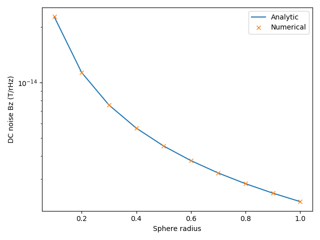
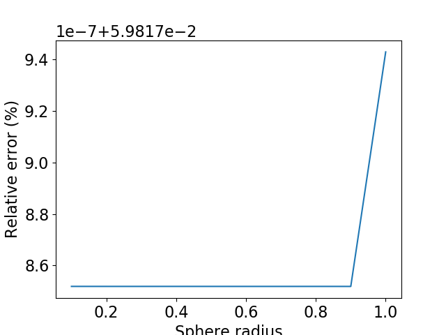
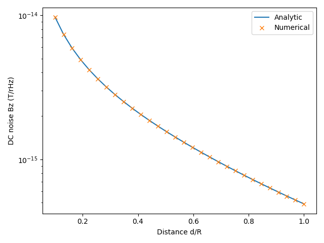
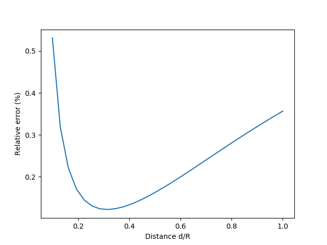

Note
Click here to download the full example code
Thermal noise computation¶
- Three different examples:
unit_sphere: DC Bnoise of a spherical shell at origin and comparison to analytical formula unit_disc: DC Bnoise of a unit disc at z-axis and comparison to analytical formula AC: AC Bnoise of a unit disc at one position
import numpy as np
import matplotlib.pyplot as plt
import trimesh
from bfieldtools.thermal_noise import compute_current_modes, visualize_current_modes, compute_dc_Bnoise, compute_ac_Bnoise
import pkg_resources
#Fix the simulation parameters
d = 100e-6
sigma = 3.7e7
T = 300
kB = 1.38064852e-23
mu0 = 4*np.pi*1e-7
Unit sphere¶
Np = 10
R = np.linspace(0.1, 1, Np)
fp = np.zeros((1,3))
B = np.zeros((Np,3))
for i in range(Np):
mesh = trimesh.load(pkg_resources.resource_filename('bfieldtools', 'example_meshes/unit_sphere.stl'))
mesh.apply_scale(R[i])
vl = compute_current_modes(mesh)
vl[:,0] = np.zeros(vl[:,0].shape) # fix DC-component
Btemp = compute_dc_Bnoise(mesh,vl,fp,sigma,d,T)
B[i] = Btemp
visualize_current_modes(mesh,vl, 40, 5)
Ban = mu0*np.sqrt(2*sigma*d*kB*T/(3*np.pi*(R)**2))
plt.figure()
plt.plot(R, Ban,label='Analytic')
plt.plot(R, B[:,2],'x',label='Numerical')
plt.legend()
plt.xlabel('Sphere radius')
plt.ylabel('DC noise Bz (T/rHz)')
RE = np.abs((B[:,2]-Ban))/np.abs(Ban)*100
plt.figure()
plt.plot(R, np.abs((B[:,2]-Ban))/np.abs(Ban)*100)
plt.xlabel('Sphere radius')
plt.ylabel('Relative error (%)')
- 
- 
Out:
/l/bfieldtools/bfieldtools/thermal_noise.py:48: RuntimeWarning: invalid value encountered in sqrt
vl[inner_verts, i] = v[:, i]/np.sqrt(u[i])
Computing C matrix, 2562 vertices by 1 target points... took 0.07 seconds.
/l/bfieldtools/bfieldtools/thermal_noise.py:48: RuntimeWarning: invalid value encountered in sqrt
vl[inner_verts, i] = v[:, i]/np.sqrt(u[i])
Computing C matrix, 2562 vertices by 1 target points... took 0.07 seconds.
Computing C matrix, 2562 vertices by 1 target points... took 0.07 seconds.
/l/bfieldtools/bfieldtools/thermal_noise.py:48: RuntimeWarning: invalid value encountered in sqrt
vl[inner_verts, i] = v[:, i]/np.sqrt(u[i])
Computing C matrix, 2562 vertices by 1 target points... took 0.07 seconds.
/l/bfieldtools/bfieldtools/thermal_noise.py:48: RuntimeWarning: invalid value encountered in sqrt
vl[inner_verts, i] = v[:, i]/np.sqrt(u[i])
Computing C matrix, 2562 vertices by 1 target points... took 0.07 seconds.
/l/bfieldtools/bfieldtools/thermal_noise.py:48: RuntimeWarning: invalid value encountered in sqrt
vl[inner_verts, i] = v[:, i]/np.sqrt(u[i])
Computing C matrix, 2562 vertices by 1 target points... took 0.07 seconds.
/l/bfieldtools/bfieldtools/thermal_noise.py:48: RuntimeWarning: invalid value encountered in sqrt
vl[inner_verts, i] = v[:, i]/np.sqrt(u[i])
Computing C matrix, 2562 vertices by 1 target points... took 0.07 seconds.
/l/bfieldtools/bfieldtools/thermal_noise.py:48: RuntimeWarning: invalid value encountered in sqrt
vl[inner_verts, i] = v[:, i]/np.sqrt(u[i])
Computing C matrix, 2562 vertices by 1 target points... took 0.07 seconds.
/l/bfieldtools/bfieldtools/thermal_noise.py:48: RuntimeWarning: invalid value encountered in sqrt
vl[inner_verts, i] = v[:, i]/np.sqrt(u[i])
Computing C matrix, 2562 vertices by 1 target points... took 0.07 seconds.
/l/bfieldtools/bfieldtools/thermal_noise.py:48: RuntimeWarning: invalid value encountered in sqrt
vl[inner_verts, i] = v[:, i]/np.sqrt(u[i])
Computing C matrix, 2562 vertices by 1 target points... took 0.07 seconds.
Unit disc, DC noise¶
mesh = trimesh.load(pkg_resources.resource_filename('bfieldtools', 'example_meshes/unit_disc.stl'))
mesh.vertices, mesh.faces = trimesh.remesh.subdivide(mesh.vertices, mesh.faces)
mesh.vertices, mesh.faces = trimesh.remesh.subdivide(mesh.vertices, mesh.faces)
vl = compute_current_modes(mesh)
visualize_current_modes(mesh,vl, 40, 5)
Np = 30
z = np.linspace(0.1, 1, Np)
fp = np.array((np.zeros(z.shape), np.zeros(z.shape), z)).T
B = compute_dc_Bnoise(mesh,vl,fp,sigma,d,T)
r = 1
Ban = mu0*np.sqrt(sigma*d*kB*T/(8*np.pi*z**2))*(1/(1+z**2/r**2))
plt.figure()
plt.semilogy(z, Ban,label='Analytic')
plt.semilogy(z, B[:,2],'x',label='Numerical')
plt.legend()
plt.xlabel('Distance d/R')
plt.ylabel('DC noise Bz (T/rHz)')
plt.figure()
plt.plot(z, np.abs((B[:,2]-Ban))/np.abs(Ban)*100)
plt.xlabel('Distance d/R')
plt.ylabel('Relative error (%)')
- 
- 
Out:
Computing C matrix, 1207 vertices by 30 target points... took 0.04 seconds.
Unit disc, AC mode¶
mesh = trimesh.load(pkg_resources.resource_filename('bfieldtools', 'example_meshes/unit_disc.stl'))
mesh.vertices, mesh.faces = trimesh.remesh.subdivide(mesh.vertices, mesh.faces)
mesh.vertices, mesh.faces = trimesh.remesh.subdivide(mesh.vertices, mesh.faces)
vl = compute_current_modes(mesh)
fp = np.zeros((1,3))
fp[0,2] = 0.1
Nfreqs = 30
freqs = np.logspace(0, 3, Nfreqs) #30 frequencies from 1 to 1000 Hz
Bf = compute_ac_Bnoise(mesh,vl,fp,freqs,sigma,d,T)
r = 1
Ban = mu0*np.sqrt(sigma*d*kB*T/(8*np.pi*fp[0,2]**2))*(1/(1+fp[0,2]**2/r**2))
plt.figure()
plt.loglog(freqs,Bf[:,0,2],label = 'Numerical')
plt.loglog(freqs, Ban*np.ones(freqs.shape), '--',label = 'Analytical, DC')
plt.xlabel('Frequency (Hz)')
plt.ylabel('Field noise (T/rHz)')
plt.legend()
plt.grid(which='both')
plt.tight_layout()
Out:
Computing C matrix, 1207 vertices by 1 target points... took 0.06 seconds.
Calculating potentials, chunk 1/1
Frequency 1.000000 computed
Frequency 1.268961 computed
Frequency 1.610262 computed
Frequency 2.043360 computed
Frequency 2.592944 computed
Frequency 3.290345 computed
Frequency 4.175319 computed
Frequency 5.298317 computed
Frequency 6.723358 computed
Frequency 8.531679 computed
Frequency 10.826367 computed
Frequency 13.738238 computed
Frequency 17.433288 computed
Frequency 22.122163 computed
Frequency 28.072162 computed
Frequency 35.622479 computed
Frequency 45.203537 computed
Frequency 57.361525 computed
Frequency 72.789538 computed
Frequency 92.367086 computed
Frequency 117.210230 computed
Frequency 148.735211 computed
Frequency 188.739182 computed
Frequency 239.502662 computed
Frequency 303.919538 computed
Frequency 385.662042 computed
Frequency 489.390092 computed
Frequency 621.016942 computed
Frequency 788.046282 computed
Frequency 1000.000000 computed
Total running time of the script: ( 1 minutes 4.571 seconds)